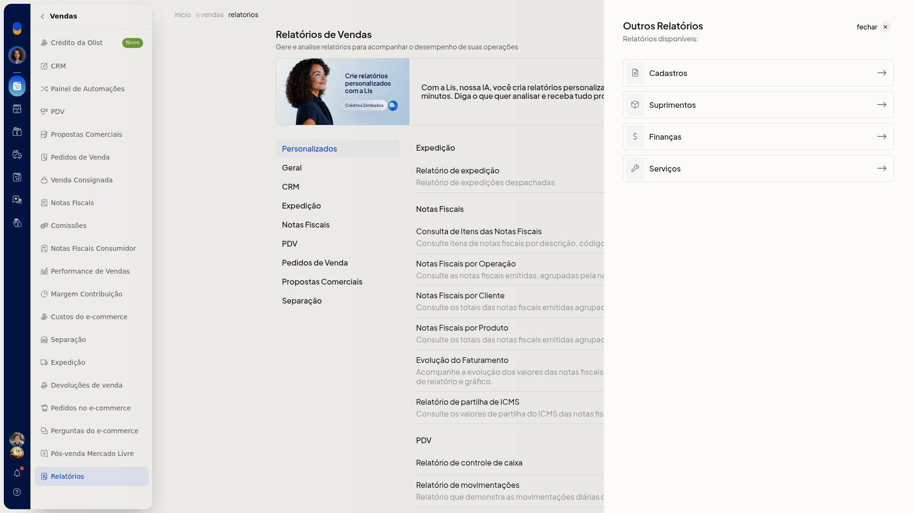

Consultar os relatórios prontos de vendas e de finanças
No ERP da Olist, os relatórios prontos de vendas e de finanças ficam agrupados por seção. Você localiza o relatório pelo grupo, em Vendas > Relatórios ou em Finanças > Relatórios.
A tela Relatórios de Finanças explica: Gere e analise relatórios para acompanhar o desempenho de suas operações.
Importante
- Não siga a trilha do topo da página. Ela não corresponde ao caminho do menu.
Instruções
-
Acesse Vendas > Relatórios ou Finanças > Relatórios.
-
Use as seções laterais para chegar a cada grupo.
-
Em Vendas, consulte os grupos Personalizados, Geral (Vendas, Relatório Financeiro de Vendas e Curva ABC), CRM, Expedição, Notas Fiscais (itens, por operação, por cliente, por produto, evolução do faturamento e partilha de ICMS), PDV (controle de caixa e movimentações), Pedidos de Venda, Propostas Comerciais e Separação.

-
Em Finanças, consulte os grupos Personalizados (Relatório Personalizado de Contas Pagar e Relatório Personalizado de Contas Receber), Geral (Balancete, DRE e Fluxo de Caixa), Caixa (Entradas e Saídas por Categoria e Entradas e Saídas por Cliente), Contas a Pagar (Relatório de Contas a Pagar) e Contas a Receber (Recebimentos e Relatório de Contas a Receber).

-
Clique em outros relatórios para abrir Cadastros, Suprimentos, Finanças e Serviços. Finanças leva à mesma tela Relatórios de Finanças, com Relatórios destacado no menu Finanças. Você encontra o relatório pronto pelo grupo, em Vendas ou em Finanças, ou chega ao catálogo de Finanças por outros relatórios.

Resultado
Os catálogos de Vendas e de Finanças listam os relatórios por seção. Em Finanças, vários itens trazem descrição.